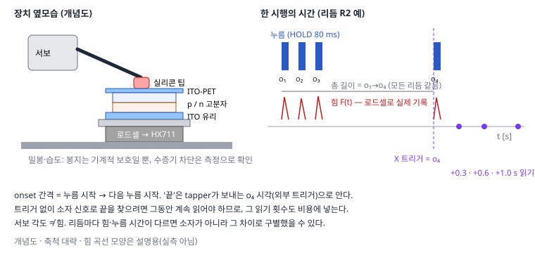

C. 감지와 처리의 결합 (인센서 컴퓨팅)
누름 같은 자극이 소자 상태를 직접 바꾸고, 그 상태에 자극의 시간 패턴이 남는지 확인한다
- 준비물: 소스미터(A0-3에서 연결해 둔 것), 압력용 소자 1개와 대조군(절연 탄성체 막) 1개, 작은 추 몇 개(20·50·100 g), 실리콘 패드. 압력용 소자가 아직 없으면 아래 "장비 없이 분석 연습"부터 합니다.
- 걸리는 시간: 1–2시간.
- 끝나면 얻는 것: 추를 올렸다 내릴 때의 전류–시간 기록 (소자와 대조군).
- 오늘의 완료 기준: 같은 추로 3번 반복한 기록이 남으면 끝입니다. 반응이 없어도 결과입니다.
- 남길 기록: 추 무게, 올린 시각·내린 시각, 읽기 전압, 온도·습도, 소자 구조(평평/요철).
장비 없이 분석 연습 (30분): python 폴더에서 아래를 실행하면, 모의 기록 → 쉬운 단서 점검 → 분류 결과 표(c_report.md)까지 C의 분석 경로 전체를 볼 수 있습니다. 모의 결과는 실제 소자에 대해 아무것도 말해 주지 않습니다.
python c_rhythm.py rhythm.npz --n 15
python c_mock.py config_c_mock.json rhythm.npz runs/c_mock_day1 --model memory --session 1
python c_mock.py config_c_mock.json rhythm.npz runs/c_mock_day2 --model memory --session 2
python c_analyze.py runs/c_mock_day1 runs/c_mock_day2
python c_analyze.py runs/c_mock_day1 runs/c_mock_day2 --normalize- 첫
c_analyze의 "새 세션 평가"에서 끝 판독(end1·end3)이 찍기(0.25) 근처로 떨어집니다. 모의에서 날마다 기준 전류를 20% 다르게 만들었기 때문입니다.--normalize(시행마다 누르기 전 기준 전류로 나누기)를 쓰면 일부 회복됩니다. 실제 실험에서 날마다 기준이 흔들리면 같은 일이 생깁니다. --model memoryless로 바꾸면 끝 판독이 찍기 수준이 됩니다 (기억이 없으면 끝에 남는 것이 없음).
이 프로젝트가 묻는 것: ① 내 소자가 누름에 반응하는가 → ② 그 반응에 이전 누름의 흔적이 남는가 → ③ 자극이 끝난 뒤 몇 번만 읽어도 리듬을 구별할 수 있는가.
A·B의 소자는 전압으로 구동합니다. C는 누름에 반응하는 새 구조(유연한 위 전극, 요철 계면 등)가 필요하고, 그 구조가 압력에 반응할지, 반응에 시간 흔적이 남을지는 아직 모릅니다. A·B가 성공해도 C가 성공한다는 뜻이 아니고, 그 반대도 마찬가지입니다.
끝났다고 볼 때: C0–C2에서 압력 응답과 대조군 비교가 재현 가능하게 기록되면 수준 2입니다. 리듬 과제에서 대조군보다 나은 결과(수준 3)가 나오지 않아도, 어떤 대조군과 비교해 무엇이 없었는지를 남기면 끝입니다.
무엇을 "인센서"라고 부르나
| 수준 | 감지 | 처리 | 예 |
|---|---|---|---|
| 일반 센서 | 센서 | 멀리 있는 CPU | 압력 센서 → ADC 100 Hz → 컴퓨터 |
| near-sensor (B8 경로 2) | 센서 | 바로 옆의 이온 소자 | ECG 모듈 → 증폭 → 이온 소자 |
| in-sensor (C) | 이온 소자 | 같은 이온 소자 | 누름이 소자 상태를 바꾸고, 끝 상태에 리듬 정보가 남음 |
통계적으로 찍기보다 잘 맞힌다는 것만으로 "이온이 계산했다"고 하지 않습니다. 압력 응답의 흔적은 고분자의 점탄성(눌린 뒤 천천히 돌아옴), 접촉 면적 변화, 전극, 누르는 장치 자체에서도 생길 수 있기 때문입니다 (C2의 대조군).
C0. 눌러서 반응이 있는가
- 소자에 작은 일정 읽기 전압(A1에서 거의 직선인 구간의 값)을 걸고 소스미터로 전류를 계속 읽습니다.
- 같은 자리에 추(예: 20 g, 50 g, 100 g)를 올렸다 내립니다. 추 아래에는 작은 실리콘 패드를 두어 닿는 면적을 일정하게 합니다.
- 예상할 수 있는 것: 전류 변화가 없음 / 올릴 때 바뀌고 내리면 곧 돌아옴 / 내린 뒤에도 천천히 돌아옴. 셋 다 결과입니다.
- 같은 방법으로 아래 대조군을 잽니다.
C1. 소자 구조 (가설)
누름 ↓ (실리콘 팁)
┌──────────────────────┐ ITO-PET (유연 전극, ITO 면이 아래)
│ 고정 음전하 층 (EMIMSPA) │
│ ~~~~~ 요철 접합면 ~~~~~ │ ← 눌리면 접촉 면적이 바뀔 것이라는 가설
│ 고정 양전하 층 (METMAT·X) │
└──────────────────────┘ ITO 유리 (단단한 바닥)- 평평한 계면과 요철 계면(사포를 PDMS로 본뜬 몰드 위에서 경화)을 둘 다 만들어 비교합니다.
- 활성 면적은 구멍 뚫은 절연 테이프로 고정하고, 누르는 팁보다 약간 크게 합니다.
- 밀봉은 기계적 보호일 뿐입니다. PDMS는 물을 튕기지만 수증기는 꽤 잘 통과시키므로 습도를 막는다고 가정하지 않습니다. 대신 측정 상자의 온도·습도를 기록하고, 누르지 않은 채 습도만 바꿔 전류가 얼마나 변하는지 따로 재서(습도 민감도) 압력 응답과 비교합니다. 장벽(barrier) 성능이 필요하면 투과 시험을 별도로 합니다.
- 흡습성은 이온 종류(예: X⁻가 FSI⁻인지 TFSI⁻인지)에 따라 다를 수 있으니 소재 정보를 확인한 뒤 해석합니다.
C2. 대조군 — 무엇과 비교해야 "이온 때문"이라고 말할 수 있나
| 대조군 | 무엇을 가르나 |
|---|---|
| 이온 고분자 대신 같은 두께의 절연 탄성체(예: PDMS 막) | 전극 간격·정전용량 변화, 장치 진동만으로 생기는 신호 |
| 한 층만 있는 소자 (위·아래 같은 고분자) | 접합이 필요한지, 한 층의 변형·전극 계면만으로 되는지 |
| 같은 소자, 읽기 전압 0 근처 | 누름이 스스로 전압을 만드는지(기계–전기 변환) |
| 상용 비교 센서 FSR(힘 감지 저항, 예: Interlink FSR 402) | 상용 센서도 이력·drift가 있다고 제조사가 밝힙니다. 그래서 "기억 없는 센서"가 아니라 비교용 상용 센서로 쓰고, 실제 회복 응답을 같은 장치로 잽니다 |
| 이상적 무기억 모델 (소프트웨어) | 로드셀로 잰 힘 자체를 "기억 없는 센서 출력"으로 보고 같은 특징·분류를 적용 → 기억이 전혀 없을 때의 기준선 |
C3. 자극 장치: 서보로 누르고 로드셀로 힘을 잰다

부품
| 품목 | 추천 | 기준 |
|---|---|---|
| 서보 | MG996R 등 금속 기어 | 5 V 동작, ESP32 3V3로 전원 공급 금지 (순간 1 A 이상) |
| 서보 전원 | 5 V 2 A 이상 어댑터 | GND를 ESP32 GND와 연결 |
| 로드셀 + HX711 모듈 | 1 kg 막대형 | HX711은 기본 10 SPS인 모듈이 많고 RATE 핀으로 80 SPS. 10 SPS면 80 ms 누름의 최대 힘을 놓칠 수 있음 |
| 보정 추 | 20·50·100·200 g | 여러 개로 직선성 확인 |
| 거치대·실리콘 팁 | 아크릴판·고무발 | 로드셀 위에 소자, 위에서 팁이 누름 |
연결
서보 신호 → GPIO 18, 서보 전원 → 외부 5 V(+), 서보 GND → 외부 5 V(−)와 ESP32 GND. 로드셀 선(빨강 E+, 검정 E−, 흰 A−, 초록 A+) → HX711 같은 이름 단자. HX711 VCC → 3V3, GND → GND, DT → GPIO 16, SCK → GPIO 17. (선 색은 제품마다 다를 수 있어 로드셀 설명서로 확인)
보정과 기록
C_tapper 펌웨어 명령:
TARE(빈 상태 영점) → 추를 올리고CAL,100(그램) → 출력된 계수를 코드에 넣습니다. 추 3–4개로 직선인지 확인합니다.- 서보 각도는 힘이 아닙니다.
ANGLE,<도>로 각도를 바꾸며 로드셀 힘을 읽어 "각도 → 힘" 표를 만들고, 원하는 힘의 각도를 고릅니다. 같은 각도라도 소자 두께·팁 마모에 따라 힘이 달라지므로 매 시행 힘을 기록합니다. T,<번호>,간격1,간격2,간격3(ms) → 펌웨어가 누름 시작(onset) 기준 간격으로 4번 누르고, 누르는 동안을 포함한 전체 힘–시간(FT·FV), 실제 onset 시각(O), 마지막 onset 시각(X)을 보냅니다.- 같은 리듬 50번의 최대 힘·누름 시간의 흩어짐을 먼저 봅니다.
C4. 기본 특성
| 실험 | 방법 | 얻는 것 |
|---|---|---|
| E1 힘–전류 | 여러 힘으로 각 10회 | 민감도, 누를 때·뗄 때 차이 |
| E2 계단 응답 | 누른 채 5초, 뗀 뒤 30초 | 반응·회복의 시간 규모 (지수 하나로 맞는지도 확인) |
| E3 짝자극 | 두 번 누름, onset 간격 0.15–5초 | 간격에 따른 두 번째/첫 번째 응답 비 |
| E4 일관성 | E3을 같은 날 3번, 다른 날 1번 | 재현성·drift |
모든 실험을 C2의 대조군에도 똑같이 합니다.
C5. 리듬 과제: "끝에서 몇 번만 읽기"
리듬과 쉬운 단서 통제
c_rhythm.py의 make_schedule: 4번 누름, 첫 onset → 마지막 onset의 총 길이를 모든 리듬에서 같게(기본 1.8초) 하고, 간격 비율만 다르게 합니다 (R1 균일, R2 앞에 몰림, R3 뒤에 몰림, R4 가운데 쉼). 간격에 ±10% 흔들림, 최소 간격 0.15초, 리듬당 60회, 순서를 섞음.
그래도 남을 수 있는 쉬운 단서를 확인합니다:
- 리듬별 최대 힘·누름 시간(로드셀) —
cue_report로 평균·표준편차 비교. 다르면 소자가 아니라 힘 차이로 구별했을 수 있습니다. - 마지막 누름에서 판독까지의 시간은 모든 리듬에서 같게 (+0.3/+0.6/+1.0 s).
- R2는 마지막 간격이 길고 R3은 짧습니다. 그래서 "마지막 누름 직전 간격"만으로도 구별될 수 있습니다. 이상적 무기억 모델(C2)이 이 단서를 얼마나 쓰는지가 기준선이 됩니다.
'끝'은 누가 알려 주나
판독 시점의 기준은 tapper가 보내는 마지막 onset 시각(X, 외부 트리거)입니다. 실제 장치에서 트리거가 없다면 소자 신호로 끝을 찾아야 하고, 그동안 계속 읽어야 하므로 그 읽기 횟수를 비용에 넣습니다.
실행 (실물 검증 대기)
config_c_example.json을 복사해config_c.json으로 저장하고 고칩니다:instrument.addr= NI MAX 주소 (바꿀 것),compliance_A·v_limit_V(바꿀 것),device.id·structure·env(바꿀 것),encoding.read_V= A1에서 거의 직선인 작은 읽기 전압 (바꿀 것),encoding.rest_s= 시행 사이 쉬기.- tapper(ESP32 + C_tapper 펌웨어)의 COM 번호를 장치 관리자에서 확인하고, 시리얼 모니터는 닫습니다.
python c_rhythm.py rhythm.npz --n 60
python c_run.py config_c.json rhythm.npz runs/c_dev01_day1 --tapper COM6 --limit 8
python c_run.py config_c.json rhythm.npz runs/c_dev01_day1 --tapper COM6
python c_analyze.py runs/c_dev01_day1- c_run.py는 시행마다 소스미터를 별도 스레드로 계속 읽고, tapper에 리듬을 보내고, 원시 기록(전류·힘·onset 시각)을 저장합니다. PC와 tapper의 시각은 명령을 보낸 순간을 0으로 맞추므로 직렬 지연(수 ms)만큼 오차가 있습니다.
- c_analyze.py는 원시 기록에서 리듬별 최대 힘·누름 시간·총 길이(쉬운 단서 점검 표)와 특징(end1, end3, full, 힘 기준선)을 뽑아 분류 결과 표를
c_report.md로 씁니다. - 다른 날 같은 소자로 한 번 더 재서(
runs/c_dev01_day2) 두 폴더를 같이 넣으면 "새 세션 평가"가 추가됩니다.
지금 경로는 전류를 시행 내내 계속 읽고, 끝 판독 값(+0.3/0.6/1.0 s)은 기록에서 나중에 뽑습니다 (오프라인 특징 추출). 그래서 이 결과는 "끝 상태에 리듬 정보가 남아 있는가"를 보여 줄 수 있지만, "끝에서만 읽는 장치가 전력·ADC 횟수를 줄였다"를 보여 주지는 않습니다. 그것은 실제로 저빈도로만 읽는 장치(C7)를 만들어 따로 재야 합니다.
결과 표
| 센서·모델 | 끝 1개 | 끝 3개 | 계속 읽기(50 Hz) |
|---|---|---|---|
| 이상적 무기억 모델 (힘 기록) | |||
| FSR (상용 비교) | |||
| 절연 탄성체 대조군 | |||
| 이온 소자 |
c_analyze.py의 줄 이름과 대응: "이상적 무기억 모델" = force_end3·force_full, "이온 소자" = end1·end3·full. FSR·절연 탄성체 대조군은 같은 명령으로 잰 별도 폴더를 분석합니다. 빈칸은 측정하기 전까지 비워 둡니다.
평가는 두 가지로 나눠 보고합니다: 같은 날·같은 소자 안에서 시행을 나눈 교차검증과, 다른 날 또는 다른 소자로 시험(새 세션 일반화). 앞의 것은 "그날 그 소자에서의 성능"일 뿐 새 날·새 소자의 성능이 아닙니다. 앞의 것만 높고 뒤의 것이 찍기 수준이면 drift나 그날의 조건을 배운 것일 수 있습니다.
C6. 소자 여러 개 (선택)
τ(흔적의 시간 규모)가 다른 소자 4개를 나란히 두고 같이 누르면 한 번의 판독에서 값 4개를 얻습니다. 비용도 같이 셉니다:
- 배선: 소자마다 위쪽 단자를 같은 읽기 전압에, 아래쪽을 각자의 션트 저항(R_s)을 거쳐 V_ref에 연결하고, 각 션트 전압을 ADS1115에 연결합니다 (ADS1115 하나는 차동 입력 2쌍 → 소자 4개면 ADS1115 두 개, 또는 단일 입력으로 V_ref 대비 측정).
- 시간: 4채널은 순차 변환입니다. 860 SPS 설정에서 1회 약 1.2 ms + I²C 시간 → 4개에 약 5–6 ms 차이가 나고, 이 시간차를 기록합니다.
- 면적·제작: 소자 4배, 각 소자의 편차 관리.
비교는 "같은 소자 4개" vs "τ가 다른 소자 4개"입니다.
C7. 보드로 판단하기 (선택 · 설계만 있음, 구현 안 됨)
이 절은 설계 메모입니다. 이 단계용 펌웨어는 코드 묶음에 없습니다. C5까지로 C를 끝내도 됩니다.
- 그대로 쓰는 것: export_mcu.py는 4클래스 readout을
W[4][NF],BIAS[4]로 내보내고, 펌웨어의scores()·decide()(B6)는 클래스 수에 상관없이 점수가 가장 큰 클래스를 고릅니다. 4클래스 내보내기의 수치 일치는 Python 시험으로 확인했습니다. - 바꿔야 하는 것: B6의 측정 부분(DAC 펄스열)은 C에 맞지 않습니다. C용 루프는 "일정 읽기 전압 유지 → tapper의 X 트리거(또는 로드셀) 대기 → +0.3/0.6/1.0 s에 채널별로 읽기 → 특징 배열 → scores()"입니다. 이 루프는 아직 작성·검증하지 않았습니다.
- 비교할 숫자: 판단 하나당 ADC 변환 횟수(끝 판독: 소자 수 × 3회 vs 계속 읽기: 약 100회 이상), 끝 검출에 드는 읽기, 에너지(B7의 정의), 정확도.
결과로 남길 것
- 소자 구조(평평/요철) 사진과 단면, 측정 환경(온도·습도) 기록
- C0 압력 응답: 이온 소자 vs 대조군
- E1–E4 곡선과 대조군
- 리듬 과제 표 + 쉬운 단서 점검 결과 + 같은 세션 / 새 세션 구분
- (선택) 소자 4개 비교, 판독 횟수·에너지 비교
- 소재 조건(가교도·두께·계면·환경)과 관측의 관계를 관측 / 가설로 나눈 표. "가교제를 늘리면 τ가 길어질 것" 같은 문장은 측정으로 확인하기 전까지 가설 열에 둡니다.
문제 해결
| 증상 | 확인 |
|---|---|
| 서보가 떨거나 ESP32가 재부팅 | 서보 전원 분리, GND 연결 |
| 로드셀 값이 계속 흘러감 | 예열 10분, 거치대 고정, TARE 다시 |
| 눌러도 전류 변화가 거의 없음 | 요철 구조, 더 얇은 위 전극, 접촉 면적, 대조군과 비교 |
| 날마다 결과가 다름 | 온도·습도 기록, 소자 노화, 팁 마모 |
| 대조군도 리듬을 잘 맞힘 | 쉬운 단서(힘·마지막 간격·판독 시점) 다시 점검 |
AI에게 맡길 때
첨부한 C_tapper.ino와 c_run.py로 리듬 실험을 하려고 해. 내 장비: Keithley [모델], ESP32 DevKitC,
HX711 [SPS 설정]. 실행 전에 확인해 줘: ① PC와 tapper 시각 맞추기 오차, ② HX711 샘플률로 80 ms 누름의
최대 힘을 잡을 수 있는지, ③ 리듬별로 남는 쉬운 단서. 코드를 고치면 전체 파일로 주고, 통신 형식은 유지해 줘.